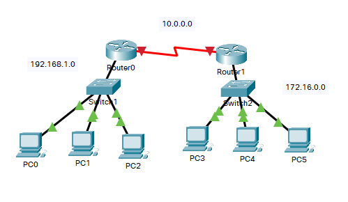
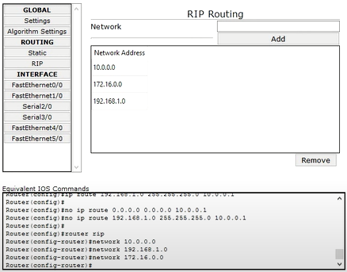

Routing Dinamico
Routing dinamico è una tecnica di routing superiore che altera le informazioni di routing in base alle mutevoli circostanze della rete esaminando i messaggi di aggiornamento del routing in arrivo. Quando si verifica il cambio di rete, invia un messaggio al router per specificare tale modifica, quindi i percorsi vengono ricalcolati e inviati come nuovo messaggio di aggiornamento del routing. Questi messaggi pervadono la rete, consentendo al router di modificare corrispondentemente le proprie tabelle di instradamento.
La tecnica utilizza protocolli di instradamento per diffondere conoscenze come RIP, OSPF, BGP, ecc. Diversamente dall'instradamento statico, non richiede l'aggiornamento manuale, invece è automatico e aggiorna periodicamente le informazioni della tabella di instradamento basandosi sulle condizioni della rete. A tal fine, sono necessarie risorse aggiuntive per la memorizzazione delle informazioni.
Routing dinamico o altrimenti chiamato come instradamento adattivo. Le decisioni di instradamento vengono modificate in questi algoritmi per rispecchiare le modifiche nella topologia o nel traffico.
Le rotte su cui viene eseguito l'instradamento dinamico sono note come rotte dinamiche in cui le informazioni rispondono ai cambiamenti nella rete in modo che vengano costantemente aggiornate. Tuttavia, c'è sempre un intervallo tra il periodo in cui una rete cambia e quando tutti i router vengono informati del cambiamento. Il router cerca di abbinare il cambio di rete e provoca un ritardo noto anche come tempo di convergenza. Il tempo di convergenza deve essere più breve. La rete più grande richiede il routing dinamico perché con il routing statico le reti più grandi non possono essere gestibili e comportano la perdita di connettività.
Il routing dinamico presenta tuttavia una serie di svantaggi:
- La trasmissione e il multicast degli aggiornamenti di routing lo rendono meno sicuro;
- Sono necessarie risorse aggiuntive come CPU, memoria e larghezza di banda del collegamento;
- Inizialmente, potrebbe essere complicato da implementare.
Rispetto all'instradamento statico, quello dinamico è molto più efficace e semplice da gestire. Prendiamo come esempio questo schema, composto da due reti ed una rete di collegamento fra i due Router.
Usando l'Algoritmo RIP, non è quindi più necessario calcolare manualmente ogni rotta, è semplicemente necessario inserire nella sezione apposita (RIP) di entrambi i Router, gli indirizzi Network delle due reti comunicanti, e quello della rete di collegamento fra le due reti:
